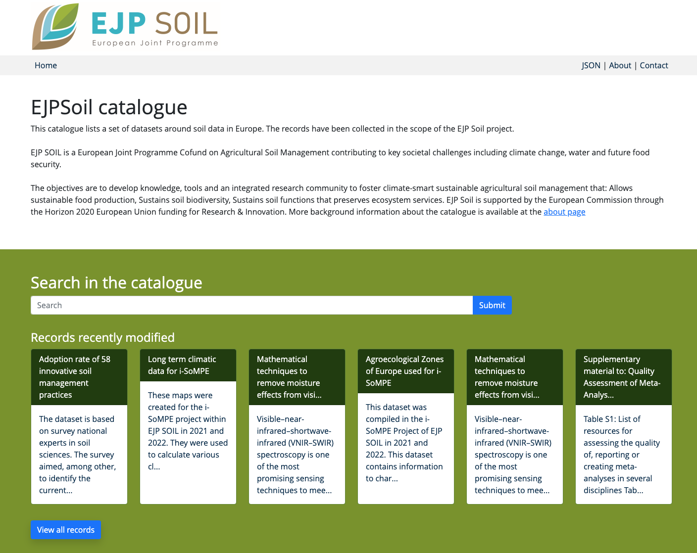
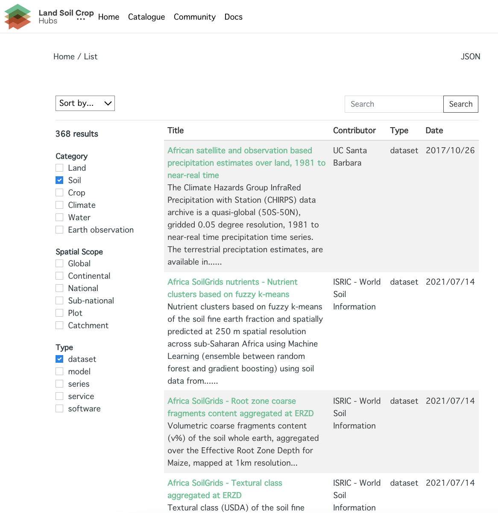
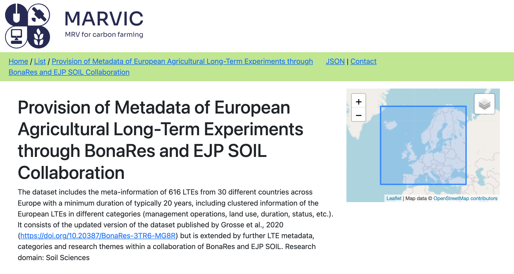

Participatory data catalogs to facilitate informed decision-making
van Genuchten, P; Genova, G; van der Woude, T; van Egmond, F; Fantappiè, M; Kempen, B; Kralidis, T;
2024-05-20
Overview
Data Standards in the soil domain are quite elaborate, but adoption is low.
- metadata
- data standardisation
- common code lists
The tools shoud be open source, supporting standards and easy to use.
Metadata
Which metadata?
- Data describing datasets
- Title, Author, Usage constraints, Temporal extent, Provenance, Data model, …
Metadata and the soil domain
- Prediction of spatio temporal variation, soil degradation and crop yields require many types of data
- Data should be well documented to understand the relevance and the usage constraints of the derived products
- Many data products have a spatio temporal aspect, so the standards of the Open GeoSpatial Consortium are most relevant. But compatibility with other standards is relevant also.
Metadata Current situation
- Not existing
- Not standardised; in a report or readme.txt file
- Maintained in a catalogue; disconnected from data
pygeometa, metadata for the rest of us
- A software library of the geopython community
- Every data file is accompanied by a structured metadata file
- YAML, easy to read by humans and machines
- A subset of the ISO19115 standard for metadata
- Exportable to variety of metadata standards (iso, dcat, stac)
Tooling around the pygeometa library; pyGeoDataCrawler
- Scan a network folder for (meta)data
- Store metadata in a git repository
- Import metadata from excel or remote sources (harvest)
Import into a catalogue; pycsw
- Metadata can be imported into a catalogue
- pycsw is a mid-size OGC reference catalog implementation
- pycsw uses a database backend (PostGreSQL)
- Various standardised API’s (CSW, STAC, OAI-PMH) and models (Dublin Core, iso19115, Datacite)
Developed and used in a series of research projects
Screen shots



Data standardisation
Initiatives
- Various initiatives developed models for interoperable soil observation data.
- Globalsoilmap, eSoter, iso28258, INSPIRE, Glosis-ld, SoilThings.
- For various reasons adoption has been low.
- Many initiatives are actually compatible, because they contain similar concepts.
- Standardisation awareness is rising.
SoilGPKG; A use case of soil data interoperability
Challenge:
- The INSPIRE UML models and their GML serialisation are disconnected from data practices in the soil community, both for data providers and consumers
Solution:
- A relational database model has been developed representing the UML classes of the INSPIRE schema.
SoilGPKG Usage
- The Geopackage can be shared as a portable database file.
- A transformation solution is provided which can transform the data into the GML serialisation (Hale Studio).
- The resulting GML can be validated in the INSPIRE data validator
- The Geopackage can be easily displayed in Desktop GIS tools, such as QGIS
SoilGPKG in EJP Soil
- Developed by Crea (IT) and Epsilon in the scope of EJPSoil
- Crea has loaded 1250 profiles into a GeoPackage
- Suggested as a good practice for sharing soil data in INSPIRE
- The relational model can also be used in PostGreSQL as a backend for actual applications.
Common code lists
Why endorse common code lists?
- Common referencable code lists are important, to facilitate interoperability in the soil domain
- Different providers can reference a universal definition of an entity
- Code lists for soil types, soil properties, soil property classes, soil analyses procedures, …
- References can be made from metadata as well as data
Challenges with current code list repositories
- Agrovoc adopted an older version of WRB
- WRB itself does not host a code list repository
- INSPIRE registry did not populate the soil code lists
- Glosis-ld codelists are not widely known and adopted (and not easy to use)
At this conference
We hope to speak to you to design mechanisms to establish soil code list repositories which are recognised and easy to use.
Thank you
Questions/comments?
References

IUSS Centenial, Florence, Italy